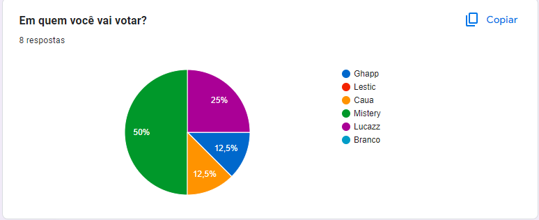
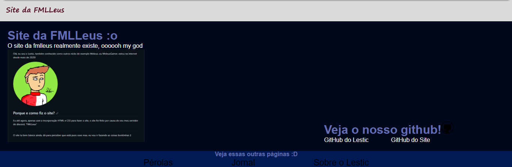
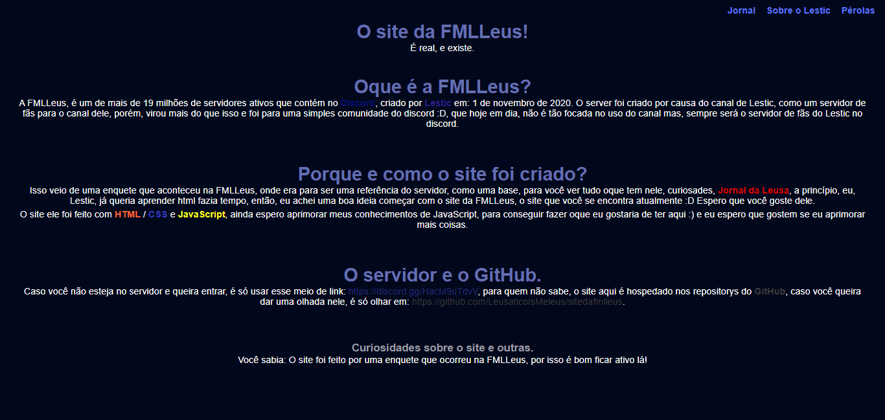

8° Edição do Jornal da Leusa! (12/10/2023)
Apresentado e editado por: Lestic (Base: Lohran)
Desafio foi dado:
Lestic, dono da FMLLeus, desafia todos os membros daqui, que caso o servidor bata hoje 12k mensagens até o final do dia, irá ter um sorteio especial, eae, você vai tentar?
Nova presidência!
Agora, o servidor há um novo presidente, no qual é o @Mistery que ganhou de 4 votos de 8

Site da FMLLeus
O site da FMLLeus começará a receber updates de JavaScript, CSS e a incorporação toda do site, como o cabeçalho, parte de cima e essas coisas, e talvez receba um domínio novo, mas ainda estamos vendo sobre isso.
A página de entrada foi remodulada na sequência de imagens como dá para ver anexadas. (Antigo -> Nova) com os updates sendo a página sendo completada com oque era planejada ser feita, e melhorada, e talvez por ela todas as páginas do site mudem o layout, só vendo para saber.


A função que temos por enquanto de JavaScript, são as curiosidades que aparecem na página do menu principal no site. Caso queira ver a função clique aqui para ir para a página principal do site.
Novo editor de Jornais
Sim! Um novo editor, caso você não saiba, todos os jornais do Site da FMLLeus, passa por um processo de edição, para ficar do jeito que vocês gostam! E nesses tempos, veio um novo editor, o: @Lohran. E seus conhecimentos de html/css talvez inovarão os Jornais da Leusa daqui para frente mas, seguirão normais
Agora vindo com notícias sobre o Lestic --->
Novo notebook e mudanças vindo com isso?!
Pois é, Lestic ganhará um novo notebook, com configurações melhores, e que roda até os jogos mais pesados do mundo! Quanto a isso, só falta chegar, com as suas demoras de entrega mas, prevenhamos que ainda hoje 12/10/2023 ou amanhã 13/10/2023 chegue, é só questão de tempo.
Curiosidade: Esse é o primeiro maior Jornal da Leusa! Ele está gigante :) espero que tenham gostado.